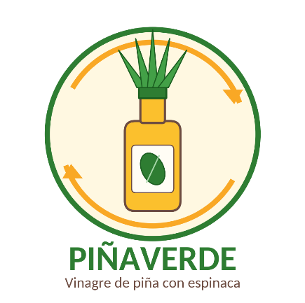
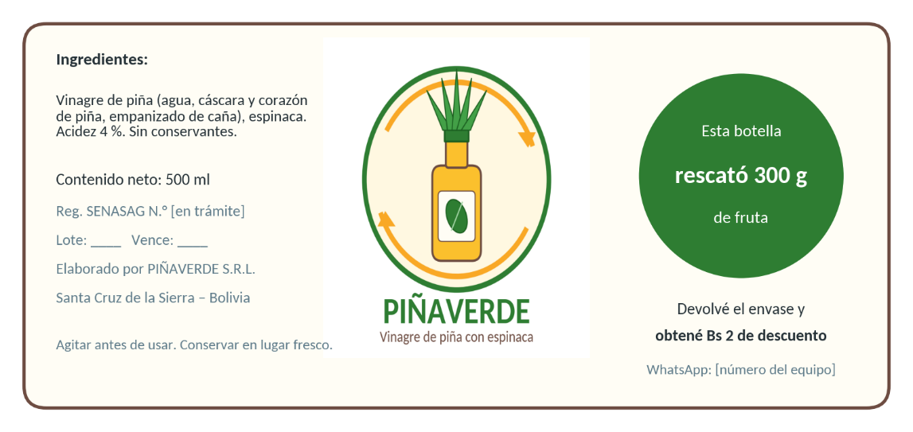
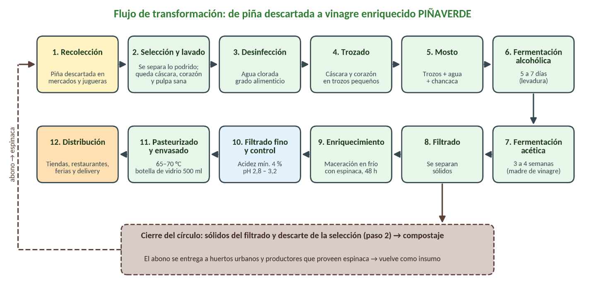

Hogares
Botella 500 ml
Ideal para ensaladas, escabeches, marinados y recetas de casa. Mantiene la historia ambiental visible desde la etiqueta.
Bs 28
PIÑAVERDE Ver productosVinagre natural cruceño
Elaboramos vinagre de piña con espinaca mediante doble fermentación natural. Cada botella rescata fruta que iba a terminar como residuo y la transforma en un aderezo local, fresco y con propósito.
Vinagre de piña con espinaca

Productos
No necesitas un carrito para entender la oferta. PIÑAVERDE se presenta en formatos claros, pensados para consumo diario y clientes que compran por volumen.
Hogares
Ideal para ensaladas, escabeches, marinados y recetas de casa. Mantiene la historia ambiental visible desde la etiqueta.
Bs 28Tiendas aliadas
Formato de 500 ml para tiendas naturistas, minimarkets y puntos saludables que buscan un producto local con margen.
Bs 21Restaurantes
Diseñado para cocina profesional. Reduce envases, mejora costo por uso y permite pedidos recurrentes para negocios gastronómicos.
Bs 140Impacto sostenible
Santa Cruz genera grandes volúmenes de residuos orgánicos. PIÑAVERDE toma una parte de esa fruta descartada y la convierte en un producto útil, medible y fácil de explicar al cliente.
Proceso
La operación se apoya en recolección diaria, selección sanitaria, doble fermentación, control de acidez y compostaje de sólidos.

Piña madura, cáscaras y corazones se separan en mercados y juguerías aliadas.
El proceso convierte azúcares naturales en un vinagre estable, ácido y aromático.
El producto sale en botella de vidrio o bidón retornable, según el canal.
Marca
El verde representa salud y espinaca. El amarillo habla de piña, sol y energía. El marrón conecta con tierra y compost. El crema aporta calidez artesanal. Todo comunica una idea: aprovechar mejor lo que la ciudad ya tiene.
Por qué elegirlo
Funciona en ensaladas, escabeches, adobos y platos frescos. La piña aporta una acidez amable y frutal.
Se ubica entre el vinagre industrial y los naturales importados, con una propuesta local más cercana.
La etiqueta muestra cuánta fruta se rescata. El cliente no compra una promesa abstracta, compra una acción concreta.
El bidón de 5 litros ayuda a restaurantes a reducir envases y comprar con mayor eficiencia.
Reserva tu botella de 500 ml o solicita una degustación para tu restaurante. Cada botella rescata 300 g de fruta y apoya a comerciantes locales.